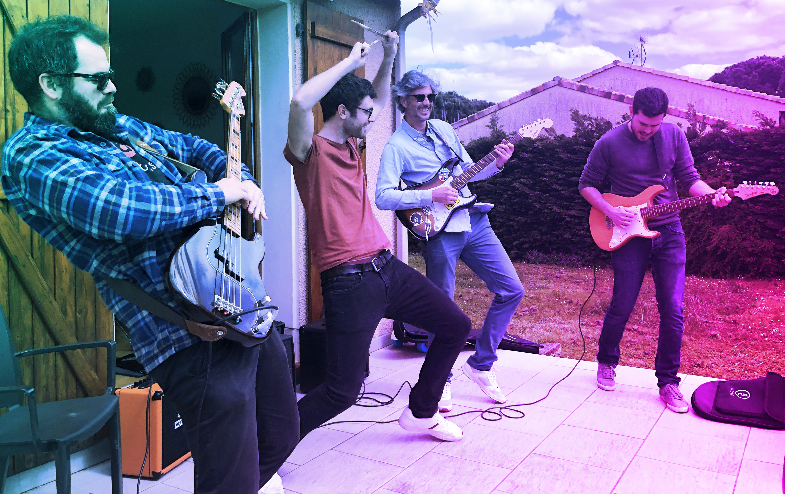

About Bombay Club
Bombay club is an indie-rock cover band from Toulouse, France. The world tour dates are soon to be announced. The position of a flutist is opened.
The list of covers
- Nada Surf - Always Love
- Gavin DeGraw - I Don't Want To Be
- Cake - I Will Survive
- M - Je Dis Aime
- Queens Of The Stone Age - I Sat By The Ocean
- Arctic Monkeys - Mardy Bum
- Nada Surf - Where Is My Mind?
The Band
- Fabien Tur - vocals
- Maxime Tur - drums
- Sylvain Guermonprez - vocals and lead guitar
- Thibaut Poux - bass